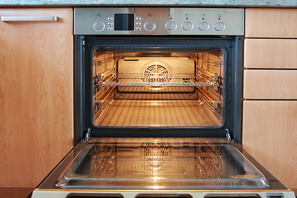
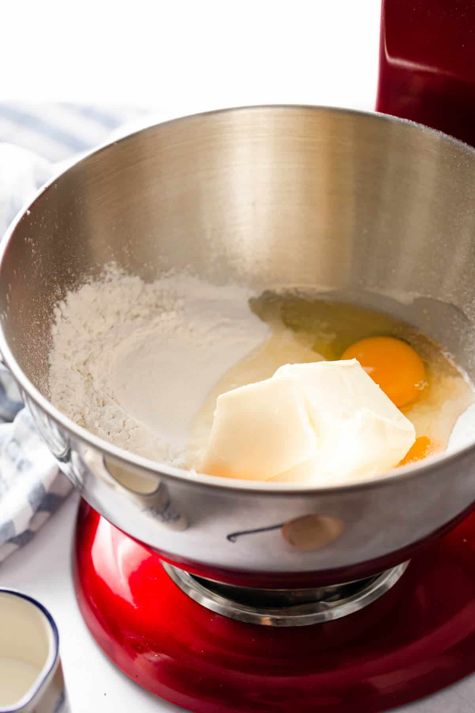
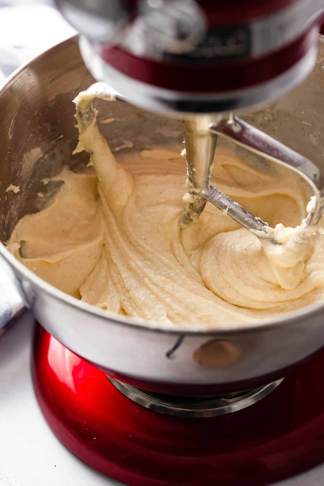
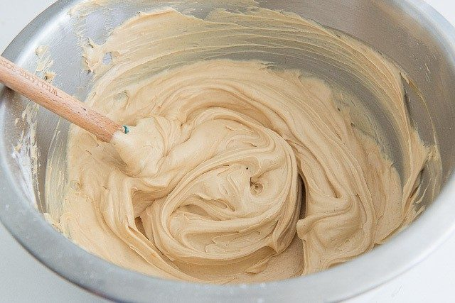
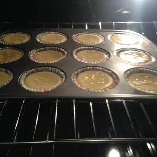
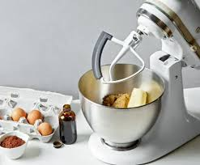
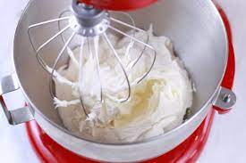
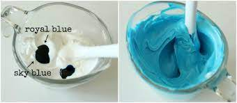
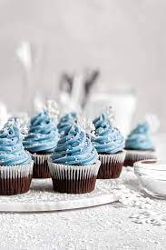

return to the index
Cupcakes

The good old cupcake, the little kings of backery.
Small, fluffy and delicious. And really easy to make by the way.
Ingridients:
For the mass:
- 120 grams of all-purpose flour
- 140 grams of sugar
- 1⁄2 teaspoon of baking powder
- 1⁄8 teaspoon of salt
- 40 grams of unsalted butter
- 120 ml of liquid milk
- 1 egg
- 1⁄2 teaspoon of vanilla extract
For the frosting :
- 198 grams of white sugar
- 1⁄3 cup of water
- 1⁄4 teaspoon of white vinegar
- 1⁄8 teaspoon of salt
- 2 egg whites
Preparations:
For the cupcakes
1. Heat the oven to 325°F / 160°C.

2. Mix the dry ingredients: in a bowl place the flour, sugar, baking powder, salt and butter. Beat with the electric mixer at
low speed, until everything is integrated and a sandy consistency is achieved.

3. Add half of the milk little by little and continue beating until integrated.

4. Mix in the egg, vanilla and the remaining milk and then add it all to mixture while continuing to beat until
smooth, do not over-beat.

5. Bake the cupcakes: pour the mixture into the cupcake molds to which you will have placed the liners and bake
for about 20 to 25 minutes until they are golden. Test if they are ready by inserting a toothpick and if it comes
out dry, they are ready. Be careful not to overbake them as they will dry out.

6. Cool cupcakes: Transfer cupcakes to wire rack to cool completely before decorating.

For the frosting/Glaze:
1. To prepare the frosting: In a small saucepan place the sugar, water, white vinegar and salt and bring to a
boil over medium heat, stirring until the sugar is completely dissolved.

2. Place the two egg whites in the mixer bowl, turn on the mixer and gradually add the prepared syrup,
beating until stiff peaks form and the temperature of the bowl is lowered, about 7 minutes.

3. Add the vanilla; the food coloring, if you're using it; beat a little more until integrated.

4. Decorate the cupcakes, serve and enjoy!
